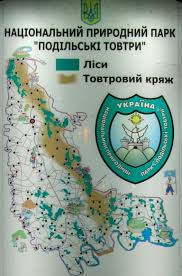

Націона́льний приро́дний парк «Поді́льські То́втри» (НПП «Подільські Товтри») — національний природний парк в Україні, в
межах Кам'янець-Подільського та Хмельницького районів, Хмельницької області.
Національний природний парк «Подільські Товтри» увійшов до семи природних чудес України у 2008 р. З 13 липня 2017 року
масив «Сатанівська Дача» НПП «Подільські Товтри» (212,01 га)
входить у світову спадщину ЮНЕСКО як один з масивів Букових
пралісів Карпат та давніх букових лісів Німеччини.
Створення парку
НПП створено Указом Президента України від 27 червня 1996 року для збереження, відтворення та раціонального використання природних ландшафтів Поділля з унікальними історико-культурними комплексами, які мають високе природоохоронне, естетичне, наукове, рекреаційне та оздоровче значення.
«Подільські Товтри» є природоохоронною, рекреаційною, культурно-освітньою, науково-дослідною установою загальнодержавного значення. Парк підпорядковано Міністерству охорони навколишнього природного середовища України.
Логічно було включити всю територію парку в склад одного району, щоб розвивати національний парк комплексно. Для цього потрібно вести зміни в існуючі райони та долучити Сатанівську селищну громаду та інші території парку до Кам'янець-Подільського району. Розвиваючи також синергію туристичного кластеру Сатанів — Кам'янець-Подільський.
Загальні відомості
Загальна площа території парку — 261 316 га, з них у власності парку перебуває 4515,90 га. За площею це найбільший парк
України.
Наявні на території НПП унікальні рукотворні об'єкти та неповторні природні комплекси створили виняткові умови для
розвитку туризму — не тільки оздоровчого, але й пізнавального. На території парку перебуває під охороною 129 об'єктів
природнозаповідного фонду. Серед яких є парки і садиби різного ступеня збереження і культурно-історичної цінності. Є
також 19 археологічних пам'яток, понад 300 історико-архітектурних пам'яток (зокрема, в Кам'янці-Подільському — понад 200
об'єктів).
Геологічна будова парку
Територія НПП за геологічним районуванням відповідає Подільському виступу кристалічного фундаменту Східноєвропейської
платформи, внаслідок чого тільки тут на значній території відслонені відклади верхнього докембрію, палеозою (кембрію,
ордовик, силур), мезозою (крейда), кайнозою (неоген) та антропогену.
Породи кристалічного фундаменту представлені мігматитами, гнейсами, кристалічними сланцями і метаультрабазитами
бузько-дністровської та подільської серій. На денну поверхню вони виходять на схід від Могилів-Подільського. На захід
вони поступово занурюються під осадові товщі фанерозою і на території заповідника залягають на глибині 400—600 м, де
розкриті тільки свердловинами.
На породах фундаменту з чітко вираженим стратиграфічним і кутовим неузгодженням залягає осадовий мегакомплекс, в якому дослідники виділяють два структурні комплекси: верхньодокембрійського — нижньопалеозойський і мезо-кайнозойський. Ці комплекси характеризуються різними структурними планами та розділені чітко вираженою поверхнею розмиву і великою перервою в часі
Велику цінність і значимість для рекреаційного господарства НПП становить запас мінеральних вод, що вже сьогодні дав змогу сформувати ефективний профілактично-лікувальний комплекс на базі мінеральної води типу «Нафтуся», содової води типу «Миргородська», мінеральних вод з унікальними терапевтичними ефектами, різноманітними розсолами з підвищеною концентрацією брому, йоду тощо.
Флора
Росте 2977 видів, форм і сортів рослин з різних кліматичних зон, зокрема 521 вид дерев і кущів, з деревно-чагарникової та трав'янистої флори — 395 видів плодових рослин, 620 видів тропічних, 111 видів корисних трав'янистих рослин місцевої дикоростучої флори
Фауна
Фауна хребетних тварин національного природного парку «Подільські Товтри» представлена близько 366 видами. З них ссавців
— 71 вид, птахів — 223 види, плазунів — 10 видів, земноводних — 11 видів, риб — 51 вид. Детальна інформація щодо
видового складу, поширення та відносної чисельності представників фауни відображена у щорічних Літописах природи
національного природного парку («Подільські Товтри» [Архівовано 13 травня 2021 у Wayback Machine.]).
До Червоної книги України (2009) занесено близько 50 видів тварин поширених на території НПП (з яких: близько 5 видів
риб, 1 — земноводних, 3 — плазунів, близько 20 — птахів та 28 — ссавців). Характерними представниками фауни парку, що
включені до Червоної книги України, є підковоніс малий, вечірниця руда, нічниця велика, вухань звичайний, широковух
європейський, нічниця ставкова, хом'як звичайний, видра річкова, пугач, гоголь, сорокопуд сірий, жовна зелена, ящірка
зелена, тритон гребінчастий, вирезуб та інші. До Європейського червоного списку включені: нічниця ставкова, вухань
бурий, вовчок ліщиновий, видра річкова, вовк, деркач; до списків Бернської конвенції: підковоніс малий, нічниця велика,
пірникоза мала, боривітер звичайний, сова вухата, бджолоїдка звичайна, одуд, дятел великий, квакша звичайна та ряд
інших.